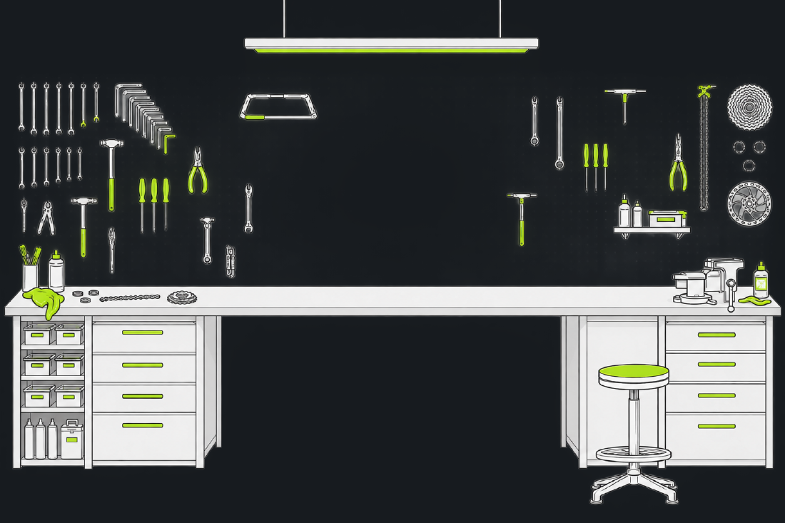

A rat has taken an interest in your drivetrain.
MongWorks tracks every part on your bike, projects wear from your Strava rides and the weather you rode in, and tells you what to service — before a worn chain takes your cassette with it.
└─Needs a Strava account. That's where the kilometres come from — there's no manual odometer to fill in.
Saves you money
MongWorks works out how worn every part actually is — projected from your Strava kilometres, the weather you rode in, and how much climbing you did — and tells you what's due before it damages something else. Then it compares prices across retailers so you're not overpaying for the replacement.
An AI mechanic that knows your bike
Describe what your bike is doing — the noise, the feel, when it started — and get a diagnosis from something that already knows every part on it, how old each one is, and how hard you've been riding.
A service history that's worth money
Every chain, cassette and set of pads you replace gets logged against the bike, with the date. When you sell it, the history goes with it — a documented bike is a bike you can ask more for.
Finds you a local mechanic
Not every job is one you want to do on your kitchen floor. For the ones that aren't, MongWorks points you at a bike shop nearby that can take it on.
Know when it's ready
There's no launch date to promise — MongWorks isn't finished. Leave your email and the rat will send you one message, on the day there's something to download. Nothing else, ever.